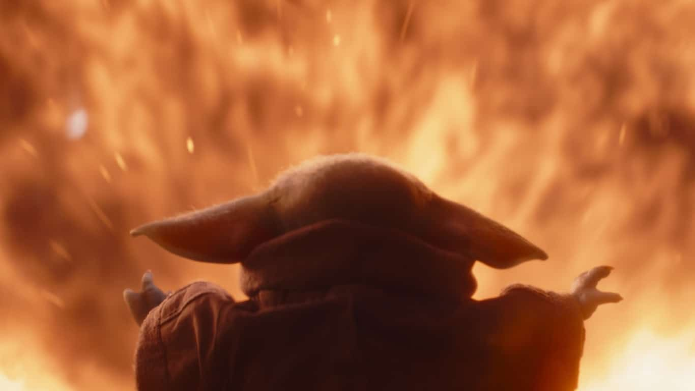

Quem é Grogu?
Grogu, também conhecido como "A Criança" ou "Baby Yoda" pelos fãs, é um jovem sensível à Força da mesma espécie de Yoda. Ele é um dos personagens centrais da série The Mandalorian e rapidamente se tornou um ícone da cultura pop.

Características
- Pequeno, com orelhas longas e olhos expressivos.
- Idade aproximada: 50 anos (ainda bebê para sua espécie).
- Sensível à Força, com habilidades como telecinese e empatia.
- Cria um forte laço afetivo com Din Djarin.
Importância na Série
Grogu é procurado por remanescentes do Império devido ao seu poder com a Força. Sua presença muda completamente a missão de Din Djarin, que passa a protegê-lo a todo custo, formando com ele uma relação de pai e filho.
